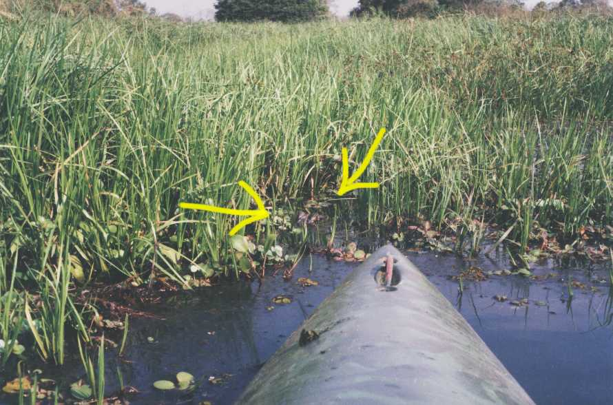
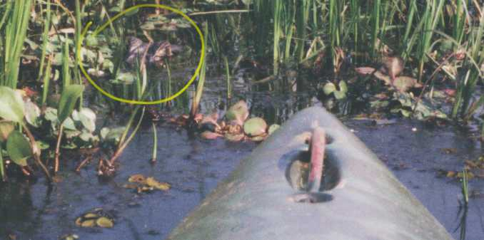
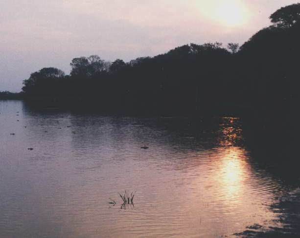
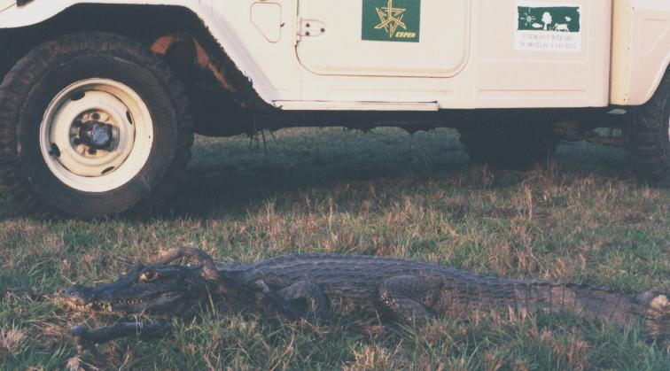
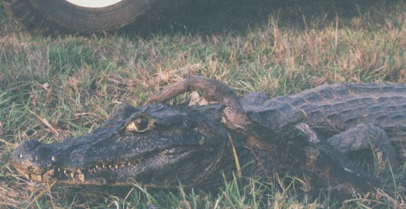
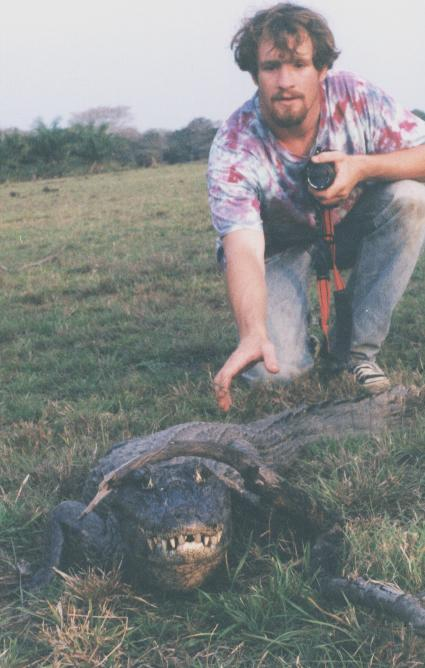

Espaço Cultural CEPEN
Galeria da Imagem
__
__
Exposição:
Vida Pantaneira
O Jacaré-do-pantanal

Local: Pantanal da Nhecolândia - MS - Brasil Foto: arquivo CEPEN / 339p / M. D. N. Xavier
Jacaré espreitando uma presa (veja detalhe abaixo)

Local: Pantanal da Nhecolândia - MS - Brasil Foto: arquivo CEPEN / 339p / M. D. N. Xavier
Detalhe dos olhos emersos do jacaré.

Local: Pantanal da Nhecolândia - MS - Brasil Foto: arquivo CEPEN / 349p / M. D. N. Xavier
Por-de-sol numa lagoa com alguns poucos jacarés.
Nesta mesma lagoa, uma semana antes,
foi estimada uma população de alguns milhares de jacarés.
À medida que as águas baixam, eles vão mudando-se para lagoas com mais água.

Local: Pantanal da Nhecolândia - MS - Brasil Foto: arquivo CEPEN / 345p / M. D. N. Xavier
Este jacaré estava no campo aberto, numa caminhada entre lagoas.
Surpreendido pelo nosso veículo, ele parou embaixo de um galho, e permaneceu completamente imóvel.
Veja abaixo.

Local: Pantanal da Nhecolândia - MS - Brasil Foto: arquivo CEPEN / 346p / M. D. N. Xavier
Observe que alguns de seus dentes inferiores transpassam a maxila, aparecendo ao lado do focinho.

Local: Pantanal da Nhecolândia - MS - Brasil Foto: arquivo CEPEN / 347p / M. D. N. Xavier
Marc A. Johnson cautelosamente ameaça tocar em sua cauda, e mesmo assim ele não se mexe.
Walfrido Tomas, experiente pesquisador, alerta que não se deve tentar tocar um jacaré,
pois ele é extremamente rápido.
O Jacaré é muito eficiente nas suas bocadas, sobretudo com rapidíssimos golpes laterais.
Quando abocanha uma presa grande, ele gira sobre seu eixo longitudinal ("manivelando" a cauda),
desta forma, dilacerando sua vítima.
Para manuseio de jacarés, é necessário imobilizá-lo com equipamento especial.

 __
__